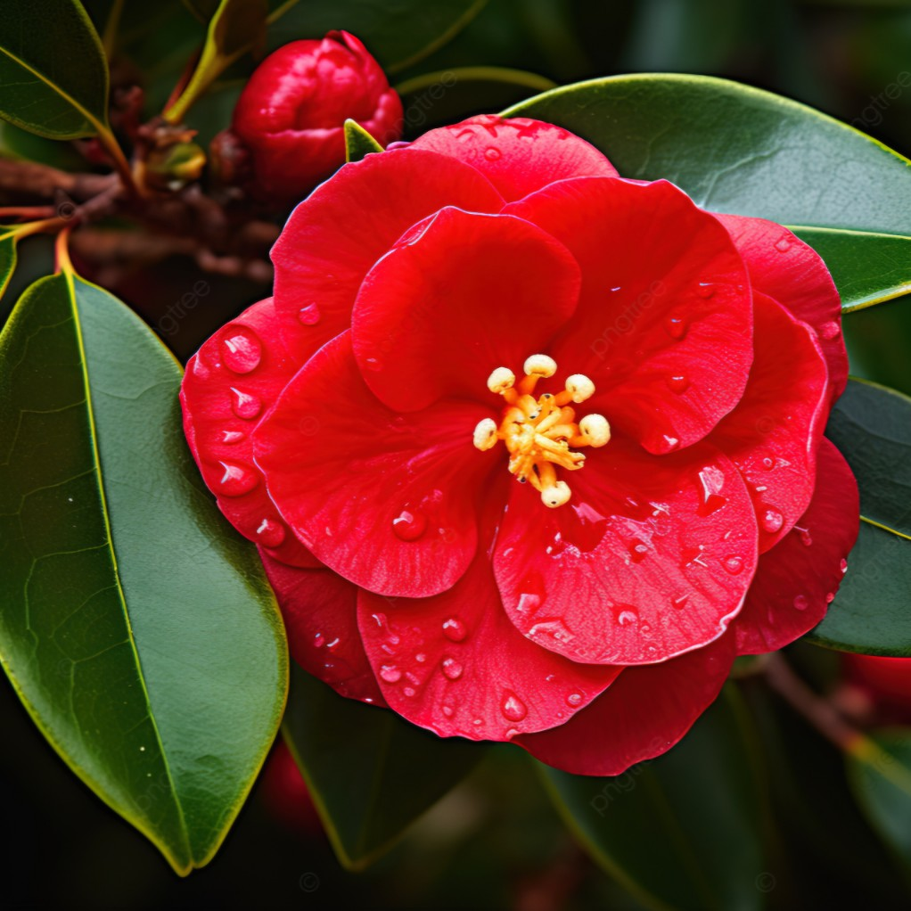
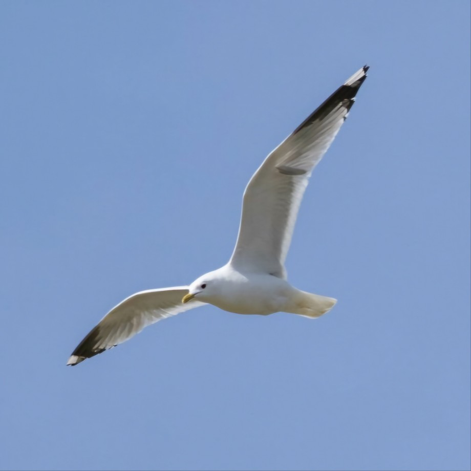
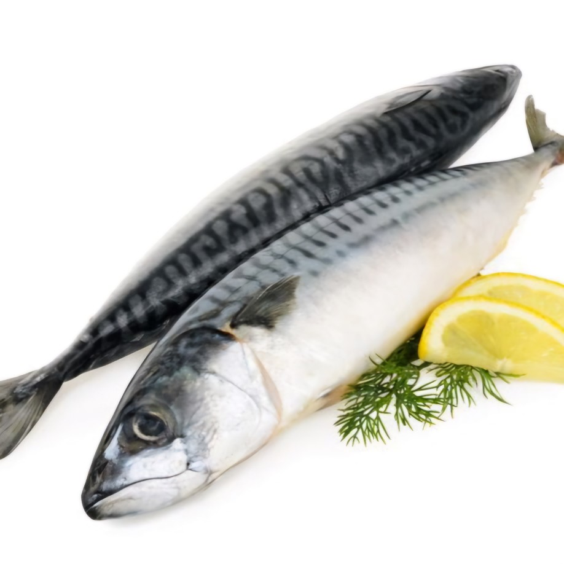
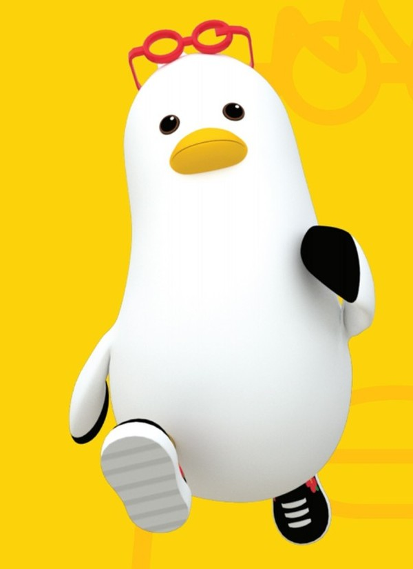

부산광역시
우리나라 제2의 수도 부산광역시.
부산 대표 관광지로 손꼽히는 해운대는 밤에는 마린시티의 야경이 더해져 더욱 화려한 해변이 된다. 감천문화마을은 사진 찍기에 좋으며, 매해 가을마다 개최되는 아시아 최대 규모의 영화제인 부산국제영화제와 함께 부산의 구석구석을 즐겨보는 것도 좋다. 전통시장 투어가 있을 만큼 먹거리가 가득한 부산의 맛기행은 필수!
부산 대표 관광지로 손꼽히는 해운대는 밤에는 마린시티의 야경이 더해져 더욱 화려한 해변이 된다. 감천문화마을은 사진 찍기에 좋으며, 매해 가을마다 개최되는 아시아 최대 규모의 영화제인 부산국제영화제와 함께 부산의 구석구석을 즐겨보는 것도 좋다. 전통시장 투어가 있을 만큼 먹거리가 가득한 부산의 맛기행은 필수!



부산의 상징
시화(市花): 동백꽃
부산의 시화(市花)는 동백꽃입니다. 동백꽃은 부산의 푸른 바다와 어우러져 아름다운 경관을 만들어냅니다. 동백꽃의 진홍색 꽃과 진녹색 잎은 부산 시민들의 따뜻하고 사랑이 많은 성격을 상징합니다.
시조(市鳥): 갈매기
부산의 시조(市鳥)는 갈매기입니다. 갈매기는 부산의 푸른 바다와 항구를 상징하는 대표적인 새입니다. 자유롭게 날아다니는 갈매기는 부산 시민들의 역동적이고 활기찬 모습을 대변합니다.
시어(市魚): 고등어
부산의 시어(市魚)는 고등어입니다. 고등어는 부산의 풍부한 해양 자원과 어업의 중요성을 상징합니다. 은빛으로 빛나는 고등어는 부산의 활기찬 항구와 어우러져 도시의 번영을 나타냅니다.

부기는 패션에 관심이 많아 남다른 패션를 지니고 있습니다. 동백꽃 커스텀 슈즈와 머리에는 항상 빨간 스마트 안경을 착용하고 다닙니다. 궁금한게 있으면 스마트 안경을 통해 정보를 얻습니다. 공경에 빠진 사람을 그냥 지나치지 못해 도와주려고 하지만 팔이 짧은 탓에 뜻대로 되지 않아 애를 먹곤 합니다.
부산시 소통 캐릭터 : 부기
부기는 부산 갈매기의 줄임말입니다. 부산 시민들의 즐거운 기억에서 착안하여, 우리 지역의 즐거운 소식들을 전하겠다는 의지를 담고 있습니다.부기는 패션에 관심이 많아 남다른 패션를 지니고 있습니다. 동백꽃 커스텀 슈즈와 머리에는 항상 빨간 스마트 안경을 착용하고 다닙니다. 궁금한게 있으면 스마트 안경을 통해 정보를 얻습니다. 공경에 빠진 사람을 그냥 지나치지 못해 도와주려고 하지만 팔이 짧은 탓에 뜻대로 되지 않아 애를 먹곤 합니다.